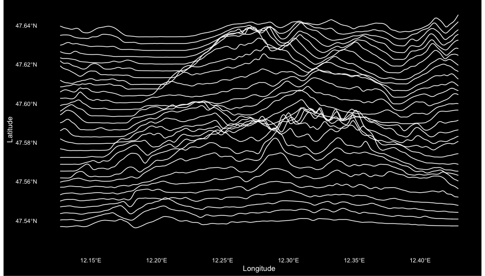

Download topographical elevation data for any location in the world and visualize it.
Installation
You can install the development version of ridges from GitHub with:
# install.packages("remotes")
remotes::install_github("jansim/ridges")Usage
The package workflow is simple:
- Select an area using the interactive map
- Get elevation data for that area
- Visualize the data
Here’s a basic example of the different kinds of visualizations available.
library(ridges)
# We'll use the included elevation data for the Wilder Kaiser mountain range
library(raster)
elevation <- ele_wilder_kaiser
# You can get your own data using the function `get_elevation()` (see below on how to select an area)
# elevation <- get_elevation(bb_wilder_kaiser)
# Create an elevation-based heatmap to check the data
plot_elevation(elevation)
# Create an elevation-based ridgeline plot
plot_ridgelines(elevation)
# Create a contour plot
plot_contours(ele_wilder_kaiser)
# Get the classic Joy Division Album Cover style
plot_ridgelines(
ele_wilder_kaiser,
fill_color = NA,
scale_factor = 12
)
# Vary the styling of the ridgelines
plot_ridgelines(
ele_wilder_kaiser,
line_color = "#000000",
fill_color = "white",
background_color = "white",
scale_factor = 8
)
# Get creative!
plot_contours(
ele_wilder_kaiser,
color_by_elevation = "both",
low_color = "#1A237E",
high_color = "#FF4081"
) + ggplot2::theme_void()
plot_ridgelines(
ele_wilder_kaiser,
n_lines = 35,
line_color = "#FF4081",
fill_color = "#FF408133",
background_color = "#1A237E"
)Getting Your Own Data
For interactive area selection, you can use draw_bb() to select an area on a map in your browser:
# Open an interactive map to select area
bb <- draw_bb("Innsbruck, Austria") # optionally center on a location
# Get elevation data for the selected area
elevation <- get_elevation(bb)
# Create your own ridgeline plot
plot_ridgelines(elevation)